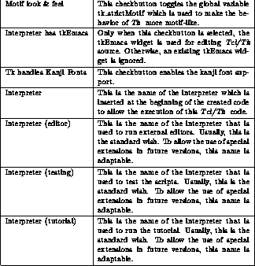
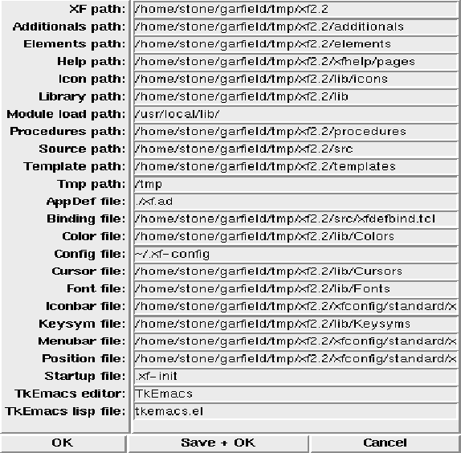

This dialog box provides access to the path and file names that XF uses.

Figure: The procedure XFProcOptionsPathFile
The single options have the following meanings (some option names may be abbreviated):
Option name & Purpose
